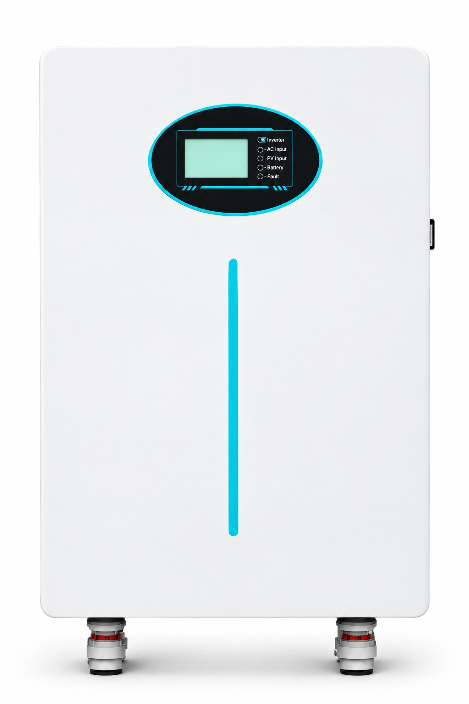

Kenya has strong solar resources, a growing distributed-energy market and demand for more reliable power across homes, shops, clinics, farms and remote sites. The right solar storage system is not selected by capacity alone. It must match the load, operating hours, grid or generator conditions and the level of backup the customer needs.
Begin with a load audit. Separate essential loads from optional loads, calculate daily energy consumption and peak demand, then size the battery, hybrid inverter and solar array around the required autonomy. Use a portable power station for small plug-and-play backup and an integrated solar storage system for larger or permanent loads.

Solar generation is available across much of the country, while grid reliability and power quality vary by location and can interrupt homes and businesses. Battery storage allows solar energy to be used after sunset and provides a buffer when grid power is unavailable.
For businesses, the value is not only backup. Storage can reduce generator runtime, protect equipment from interruptions and make better use of daytime solar production. For homes and clinics, the priority is usually continuity for lighting, communications, refrigeration, security or critical equipment.
Essential backup usually covers lighting, phones, internet, television, fans and selected appliances. Homes using refrigeration, pumping or air-conditioning need a higher inverter rating and a larger battery after confirming starting loads.
Retail stores, salons, restaurants and offices may need to keep payment terminals, computers, communications equipment, lighting and refrigeration online. A hybrid system can coordinate solar, battery and grid power around operating hours.
Vaccine refrigeration, diagnostic devices, lighting and communication equipment should be separated into critical-load circuits. Backup duration and equipment compatibility must be confirmed before selecting the system.
Pumps, remote communications equipment and field operations often need solar generation, a larger battery bank and generator coordination. Site conditions, maintenance access and dust protection are important parts of the design.
Record each appliance or machine, its running power, starting power and daily operating hours. Mark which loads must remain online during an outage.
Multiply power by operating hours and add the results. Include margin for inverter losses, battery efficiency, ageing and future demand.
Pumps, compressors and motors can require several times their running power at startup. The inverter must support the surge without shutting down the critical loads.
Choose autonomy based on the real cost of an outage. A clinic may require longer backup than a home; a commercial site may prefer a staged design that protects the highest-value loads first.
Panel output depends on roof or ground area, shading, orientation, temperature, dust and seasonal weather. The solar array must cover daytime use and recharge the battery for the required evening or outage period.
| Configuration | Best for | Key advantage |
|---|---|---|
| Grid-tied hybrid | Homes, shops, offices and clinics with a grid connection | Coordinates solar, battery and grid while providing outage backup |
| Off-grid | Remote homes, farms, telecom and field sites | Operates independently with battery autonomy and optional generator support |
| Generator hybrid | Sites with existing diesel or petrol generation | Reduces generator runtime while maintaining backup for high loads |
LiFePO4 batteries offer long cycle life, a stable safety profile and a practical balance between cost and lifetime. They are suitable for daily cycling and can be arranged in modular systems for homes and commercial projects. As with any battery, installation temperature, ventilation, dust and charge settings affect service life.
For small plug-and-play backup, compare our portable power station range. For villas, clinics, shops and commercial projects, review integrated solar storage solutions. Distributors can request a paid trial order through the B2B wholesale program or contact us through our sales team.
A compact home backup system may start around 5 kWh, but the final size depends on essential loads, outage length and whether refrigeration, pumping or air-conditioning is included.
Yes. A hybrid inverter can coordinate solar, battery and grid power while providing backup when the grid is unavailable.
Yes, when the battery is installed in a shaded, ventilated location within the manufacturer's operating temperature range.
Battery capacity, inverter compatibility, solar input limits, certifications, transport documents, warranty and after-sales support.
Send the city, load list, backup hours and site photos. SunVolt can recommend a portable power station or integrated solar storage system with the required inverter, battery and solar capacity.
Discuss Your Kenya Project on WhatsAppSend your equipment list, required backup hours and delivery city. We will recommend a system and prepare a quotation.
Request a Quotation